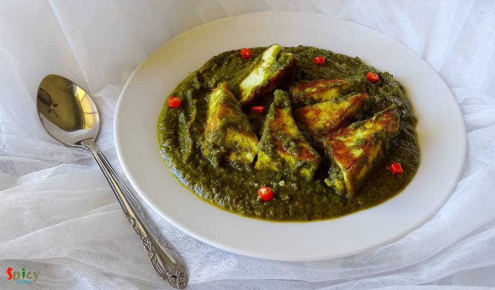
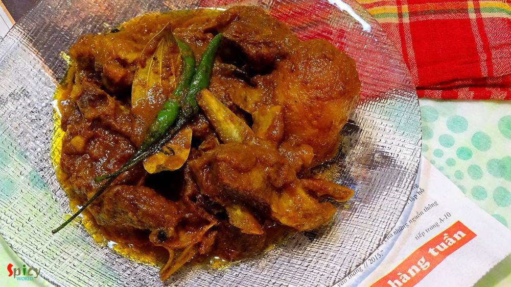
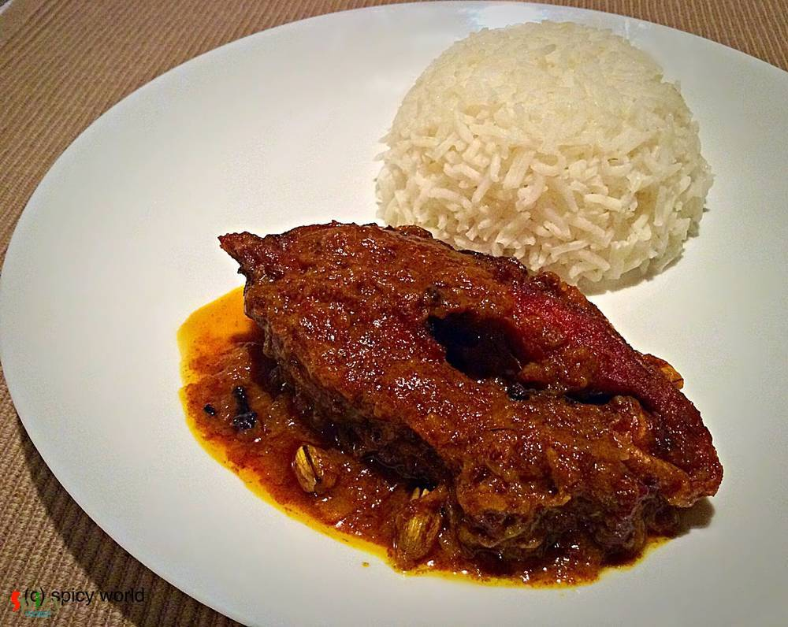
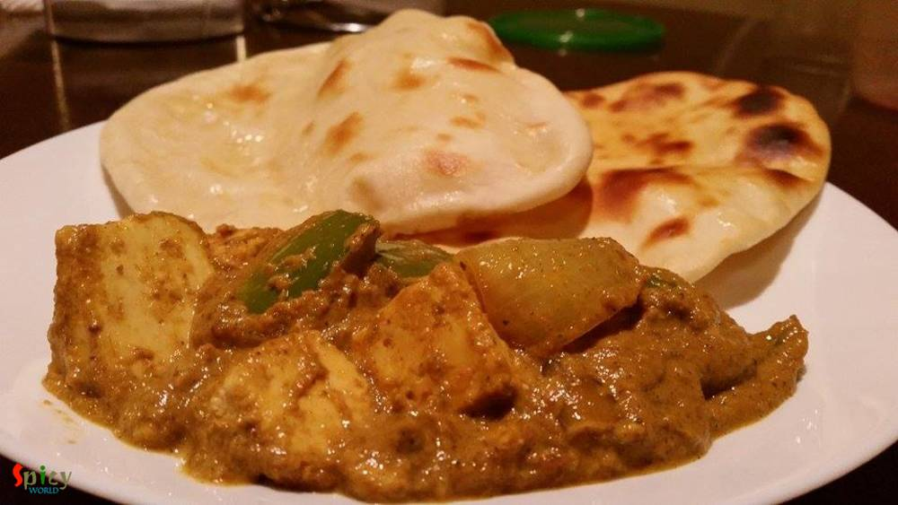

Simple and Easy Recipes
Posts on 'gravy'

Nonveg Recipe
Jan 2, 2020
Murgh Musallam is a delicacy from Mughlai cuisine. The recipe requires for whole chicken but you can definitely make it with medium size pieces also. In Murgh Musallam recipe, the whole chicken will be marinated for a good long time, then it will get stuffed with eggs and after that the chicken will get cooked in a flavorful onion and nut based gravy. You can make this dish on special occasions an ...


Nonveg Recipe
Jun 19, 2019
Most of the Punjabi curries call for three important ingredients - freshly ground Garam Masala powder, Kasuri methi (dry fenugreek leaves) and Ghee (clarified butter). These ingredients make their curries very flavorful and tasty. Rest of the process is simple, marinated mutton will be cooked in onion tomato gravy. This punjabi mutton curry goes best with plain chapati (Indian flatbread) or rice. ...

Nonveg Recipe
Sep 24, 2015
Yesterday morning during surfing net I saw an eyecatching picture of Chicken Dak Bunglow curry. It made me doing immediate preparation for dinner.Trust me, after dinner there was literally nothing in our plate except bones:-) It became so damn tasty ! I once ate the mutton version of this curry. That was also finger licking delicious, will upload that soon. Do give this recipe a try and I am sure ...

Nonveg Recipe
Feb 14, 2019
Mutton korma is an old school and popular non veg main course item from Old Delhi. Any korma recipe has onion and yogurt based sauce, some even add nut paste also. Last weekend I had a party in my house. Among all the foods, the main attraction was Mutton Korma. Korma is very rich itself. Always serve this with light rice item or naan. Do give it a try and let me know how it turned out for you.

Veg Recipe
Dec 27, 2018
Paneer Bhurji is a delicious recipe of crumbled cottage cheese which goes best with plain chapati or paratha or pao. In this recipe, crumbled paneer will be cooked in onion, ginger, garlic, tomato based creamy sauce with some flavorful spices. This paneer bhurji gravy will take very less time to cook. Try this recipe in your kitchen and let me know how it turned out for you.

Nonveg Recipe
Sep 13, 2019
One of the most famous dish from Mughlai cuisine is 'Chicken Chaap' and the taste is unbeatable. You will find the actual taste and flavor in few popular restaurants in Kolkata. After researching for a long time about the authentic recipe of Chicken chaap, here is the way how I made it. This recipe will give you the exact flavor of restaurant style Chaap. This dish should not be eaten as regular m ...

Nonveg Recipe
Oct 29, 2018
Pudina Chicken has a delicious yogurt and mint based gravy which goes best with plain roti or Indian flatbread. Mint leaves / Pudina patta has it's very own unique taste and flavor, which is why you can only use them in those dishes where it fits properly. Not every chicken curry tastes good with mint but this one is my family favorite. Pudina Chicken is very simple recipe with loads of fresh flav ...

Nonveg Recipe
Sep 13, 2018
Mughlai chicken curry is a thick, nut based gravy dish from the Mughlai (awadhi) cuisine. The sauce of this Mughlai Chicken curry is very rich so you can serve this with naan, roti or light pulao. In this recipe first marinated chicken will be fried then cooked in onion, tomato gravy with lots of other flavorful ingredients. Last Saturday my family enjoyed it thoroughly, now its time for you to en ...

Nonveg Recipe
Jun 29, 2016
Our common friend Subhodip visited our house last weekend for a dinner. He is a real foodie and have a very good knowledge about food and restaurants. So, I wanted to make something new on chicken for him and also for my blog. I have already posted 'mutton dopyaza' recipe, then I thought this time why not with chicken? Confirmed the idea with my hubby and 'chicken dopyaza' got selected for main-co ...

Nonveg Recipe
May 18, 2018
I have someone in my house who often demands to eat 'homemade-restaurant style' dinner in weekend ???. That's why last Sunday I had to make 'butter chicken' along with 'butter naan'. Nowadays 'butter chicken' is famous in all over the world. In Indian restaurants this is the mostly ordered dish. It has a tomato based, rich, velvety gravy and grilled, juicy chicken pieces. The combination was a tot ...

Veg Recipe
Aug 22, 2016
How many of you like the smell of 'capsicum' / green bell pepper in vegetarian dishes ?? I am. Whenever I cook, specially without onion and garlic dishes, most of the time I end up adding capsicum into it ... i know it sounds stupid but surprisingly the taste becomes more yumm ! Today's recipe is about 'paneer rezala', a vegetarian mughlai delicacy, where paneer cubes are cooked in a nut based whi ...

Nonveg Recipe
Jul 20, 2016
Pakistani cuisine is full of delicious surprises. Their cuisine is lot more than just kababs and biriyani. I was searching for a different 'goat meat' recipe and suddenly came across with this delicious 'peshawari mutton' recipe. Don't know whether the cooking process is authentic or not, but I really fell for its simplicity. This dish doesn't require too many ingredients even though surprisingly ...

Nonveg Recipe
Jun 13, 2016
Earlier I have shared the recipe of 'Kolhapuri Egg curry', today I am going to share the same recipe, but with chicken and some changes. One of the main ingredient in Maharashtrian cuisine is 'coconut'. We both are not too much coconut eater but when it comes to make authentic dish, I always try to make the taste as close as possible. As this is a 'Kolhapuri' gravy, you have to incorporate coconut ...

Nonveg Recipe
Jul 12, 2016
In USA, every Indian resturant serves 'chicken tikka masala' and it tastes delicious. I never had it in India, don't know why ? Tikka sized grilled chicken, onion and bell peppers are cooked in a tomato based creamy gravy. After tasting this dish several times in restaurants, last month I thought of making it at home. Few months ago I uploaded the recipe of 'chicken tikka kabab', so I am going to ...

Nonveg Recipe
May 16, 2016
This is a very popular dish from Mughlai cuisine in India. In this recipe medium size mutton pieces are cooked in a white, creamy, nut based rich gravy. 'Rezala' goes best with naan, biriyani, roti or paratha. I have already posted several recipe on 'rezala'. The dish has a very unique taste. It is neither very spicy nor very sweet. I made this last week and thoroughly enjoyed it with plain rice. ...

Nonveg Recipe
May 10, 2016
This chicken curry belongs to the category of 'dhaba food'. The gravy is very popular in Punjab and all over India. You can also make this dish with paneer or vegetables. The white, creamy texture of the gravy and beautiful aroma of fenugreek leaves will take you to heaven. I used boneless chicken for this recipe, feel free to make it with chicken on bone, it will be no issue. You can pair this di ...

Nonveg Recipe
Apr 11, 2016
Chicken curry is almost regular in my kitchen and that's why I always try to do some twists with the masala, otherwise who will eat same chicken curry regularly? Nobody ! This time I made the twist with dry spices. Generally whole garam masala is used in this type of curry but I decided to go for a change and surprisingly I got the perfect taste. 'Bhuna' means koshano / in low flame you have to co ...

Nonveg Recipe
Mar 23, 2016
Whenever I buy different types of sauces from market, can't think anything but Chinese dishes. With few ingredients you can creat such a splendid item. So, last of last weekend I went ahead and made 'chicken manchurian', the more I can say about it's delicious tangy and spicy taste the less it seems. We enjoyed it with some fried rice but you can also serve this with hakka noodles or simple rumali ...

Veg Recipe
Feb 15, 2016
'Palak paneer' is a famous north indian dish. This is a hit item for spinach lovers. After adding heavy cream the texture will make you greedy. Palak paneer's smooth, rich and velvety gravy is beyond everything. It goes very well with butter naan. It's a no onion and no garlic recipe

Nonveg Recipe
Jan 26, 2016
'Thakurbari' means Rabindranath Tagore's home, which is situated at Jorashanko, Kolkata. Tagore's family is popular for many things and one of them is 'cooking'. Nowadays, you can watch plenty of cooking programmes in TV, but when I was in school, only few magazines used to publish cooking recipes on weekends only. The craze was also different in that time. I still can remember how my mom and gran ...

Nonveg Recipe
Dec 18, 2015
First let me thank Disha D'souza for this unique idea. 2-3 weeks ago in a facebook group I saw her unique post and really got inspired. Though I changed the name and recipe little bit (hope she won't mind), but the idea credit must go to Disha. Lots of love and thanks from 'spicy world' to her. Now lets talk about the dish. You can see this is a double colored chicken curry. I also maintain two di ...

Nonveg Recipe
Dec 14, 2015
Whenever 'he' returns from market and gives me a bag of mutton, it always brings an extra big smile on my face and a great joy in my heart. I guess, this happens to many of you also ?. I always try to do something new to my mutton curry, because you all know about my experimental nature!! This time I made 'khara masala mutton', the taste was heavenly. After finishing the meal, there were nothing ...

Veg Recipe
Dec 7, 2015
'Makhni' is a name of rich, smooth, creamy gravy which is very popular in India. You can make 'chicken makhni', 'paneer makhni', 'kofta curry' and many more dishes with this gravy. I personally love the methi flavour and creaminess about this gravy. We had it in dinner last night with soft butter naans. The combination was heavenly. You just have to try this.

Nonveg Recipe
Nov 21, 2015
When an inch of oil or ghee floats upon gravy, yes its 'mughlai nawabi dish'. 'Nawab' means king. This category of curries have nice colored, rich, thick, creamy gravy. 'Chicken Korma' is my favourite one. You can easily eat this curry once in a month along with 'biriyani', 'pulaao', 'butter naan' or 'rumali roti'. Do not put this kind of food in your regular diet because you have to make or eat k ...

Nonveg Recipe
Nov 19, 2015
When I was in college, I loved to do some cooking with my mom. 'Dhaniya Chicken' was one of my teenage speciality dish. Dhaniya / dhonepata means coriander leaves. I only prefer to use garlic and don't like to use whole spices for this dish. According to me, the strong aroma of whole spices dominate the flavour of fresh coriander leaves. After a long time, last night I made 'dhonepata chicken' alo ...

Veg Recipe
Nov 5, 2015
Bengalis are always very fond of 'peas kochuri' and 'aloor dom' (Dum Aloo) during winter. In Texas, the temparature starts falling as we approach towards the winter time. I already took out light blankets, full sleeves and light sweters. Last weekend 'he' begged me for 'kochuri-alurdom' and here is the result ... ? I have already posted one recipe of 'aloor dom' which we can make for party or any ...

Nonveg Recipe
Oct 23, 2015
It's always very hard for me to make as usual meal like 'daal, sabji' on weekend. I am sure you will get delicious aroma of spicy dishes from my kitchen almost every weekend. Last weekend 'charcoal' flavour was coming out from a new chicken preparation. Yes, its 'dahi dhuan chicken'. If you like to eat dhaba foods then you will become a fan of this dish. It has a thick rich gravy, nice crunch of o ...
")
Nonveg Recipe
Oct 15, 2015
In India 'dhaba' means roadside food joints. They offer delicious and spicy meals. Among all of their meals, 'tarka-roti' is the famous one. I once ate 'Mutton Tarka' from them and it was super tasty. Last week I try this tarka recipe and reveal that it tastes exactly like 'dhaba tarka'. Just follow the recipe and impress your family.

Nonveg Recipe
Oct 14, 2015
We Bengalis are very fond of fish. Our common meal is fish curry and rice. This recipe is one of the fish curry which we make in occasions and gatherings. I already gave you one kaliya recipe and this one is also very tasty. Try this at your home and let me know how it turns out.

Nonveg Recipe
Oct 5, 2015
I made this dish yesterday and it was a blast. So, I am sharing this recipe with you. Please give it a try and let me know about your experience.

Veg Recipe
Sep 30, 2015
Though me and my hubby both are nonveg lovers, but we also love spicy veg dishes. 'Kadai Paneer' is our favourite one. Last night my dinner was this paneer dish along with butter naan. There were no other words but 'delicious and mouth watering' about the combination. The main attraction here is KADAI masala. It gives such a nice flavour in this dish. Just close your eyes and go for it.

Nonveg Recipe
Sep 23, 2015
In Bengali's weekdays lunch menu fish has to be there. There is a say 'mache-bhate-bangali' indicates our common meal is fish curry and rice. This is a special dish for party, occasions or gatherings. Macher kaliya goes very well with sweet pulao, fried rice or even plain rice.

Nonveg Recipe
Sep 13, 2015
I got this recipe from one famous cooking channel in youtube. So, let me thank them first. Now the main attraction of this chicken curry is its aroma and simpleness. When I was making it, the aroma from the spices made my husband and me very much impatient. But anyway we had to wait till dinner and enjoyed with hot roti a lot. Make this dish and I am sure it will become your favourite too.

Nonveg Recipe
Sep 11, 2015
Whenever you are unable to think of any maincourse dish for your party, you can blindly rely on this chicken curry. Everyone will like it. This curry has nice aroma of 'kadai masala', little crunch of onion, capsicum and the juicy chicken pieces. Serve this curry with pulao or biriyani, then your party menu will be memorable.